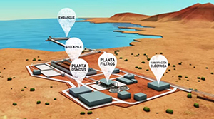

La mañana de este martes, la Cámara de Diputados rechazó la creación de la comisión investigadora que pretendía indagar las presuntas presiones que habría ejercido el ministro del Interior, Mario Fernández, para que el proyecto minero Dominga fuera rechazado por la Comisión de Evaluación Ambiental.
En la sala, la acción presentada por la bancada UDI, sólo obtuvo 44 de los 47 votos que necesitaba para constituirse.
Al respecto, Felipe Ward, sostuvo que “vamos a insistir en que esto se acepte, de reponerse podría ser este jueves y yo sigo insistiendo en que hay antecedentes que hay que investigar, la idea sería fusionar las dos comisiones investigadoras”.